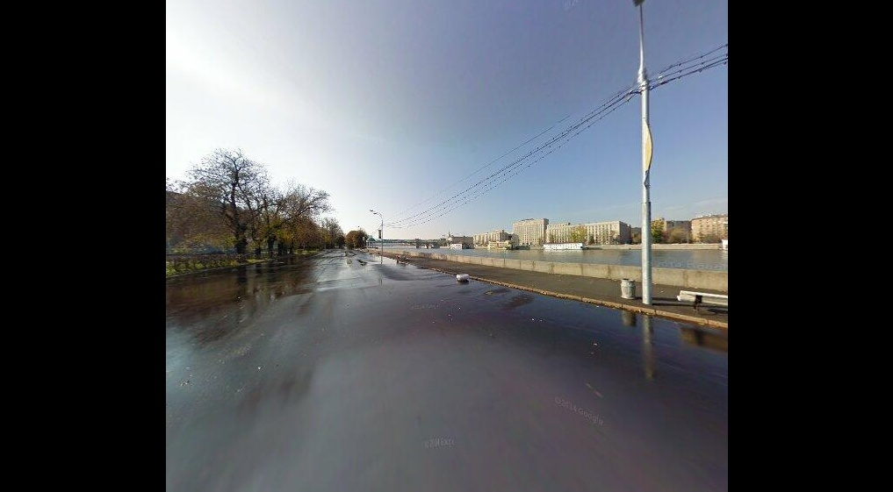
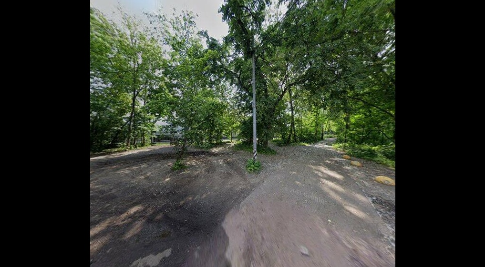
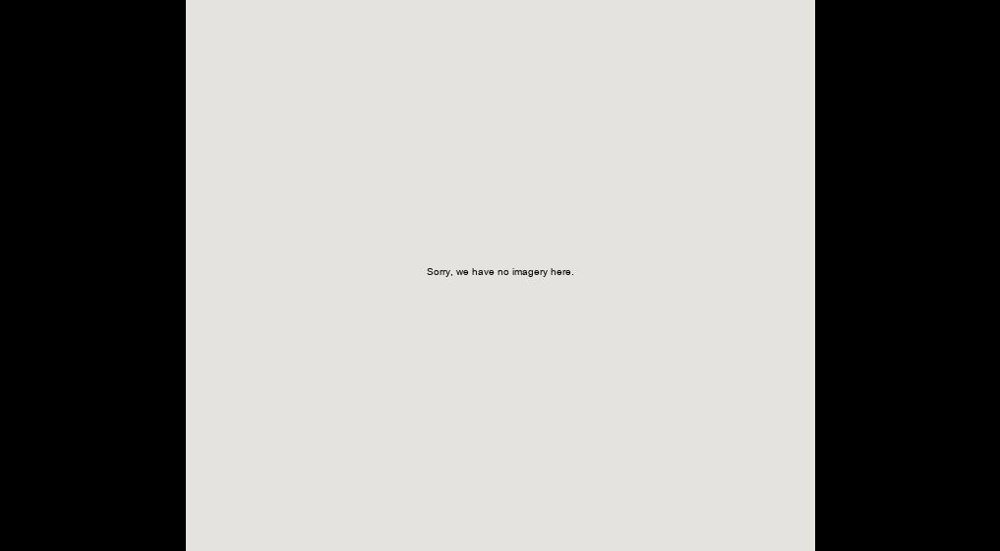
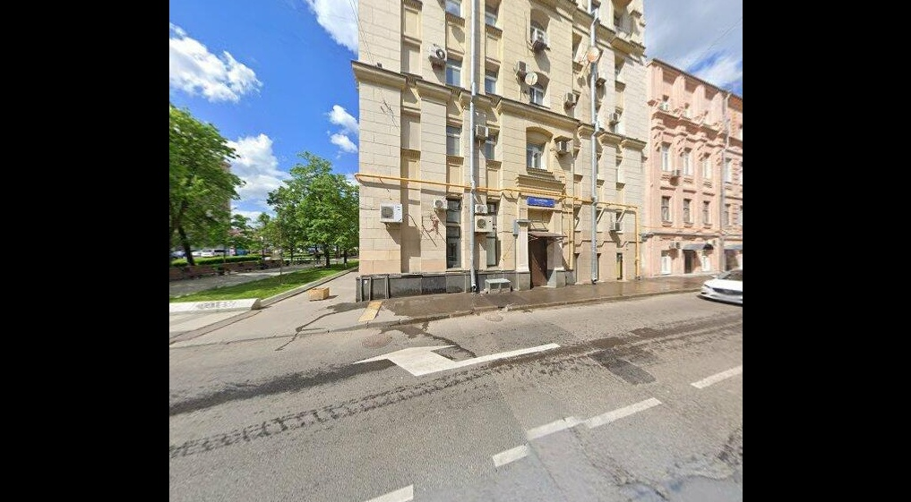
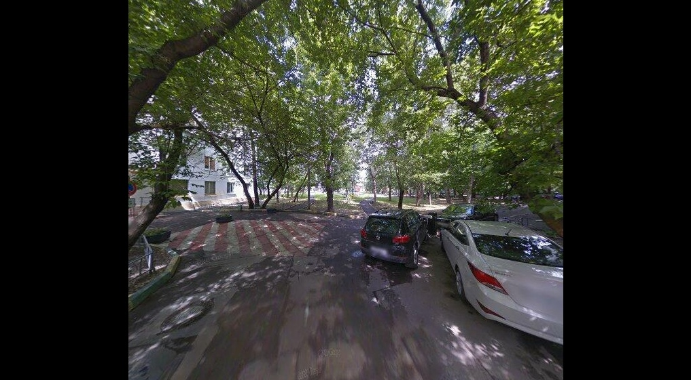

Модель: QLoRA (base + checkpoint-600) · n=35 сэмплов · seed=42
Ошибка: 583 м (0.583 км)
Минимальная ошибка (лучшее сработавшее приближение к GT в этой выборке).
GT: 55.72798, 37.59654 | Pred: 55.73261, 37.60090

Ошибка: 10395 м (10.395 км)
Максимальная ошибка (худший исход: типично при неоднозначном кадре или сильно нехарактерной сцене).
GT: 55.80320, 37.68723 | Pred: 55.72360, 37.60009

Ошибка: 4394 м (4.394 км)
Медианный случай: «типичный» уровень ошибки в середине распределения.
GT: 55.73744, 37.66668 | Pred: 55.72360, 37.60094

Ошибка: 4667 м (4.667 км)
Случай, ближайший к средней ошибке в выборке (mean ≈ 5312 м).
GT: 55.76263, 37.65799 | Pred: 55.73621, 37.60004

Ошибка: 2880 м (2.880 км)
Соответствует медиане по валидации работы: порядок нескольких километров (район).
GT: 55.71153, 37.64073 | Pred: 55.72360, 37.60004

Файл открыт локально; для снимка экрана используйте полноэкранный фрагмент или инструмент «Ножницы» Windows.